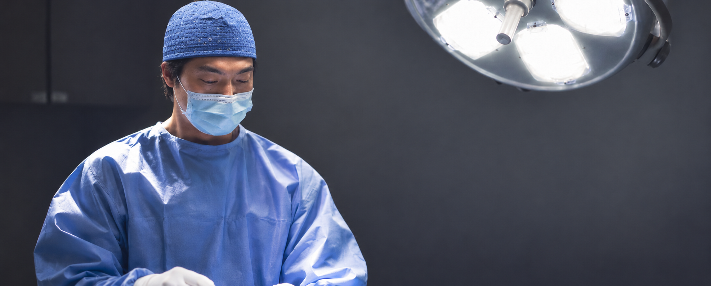
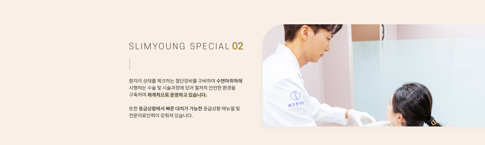
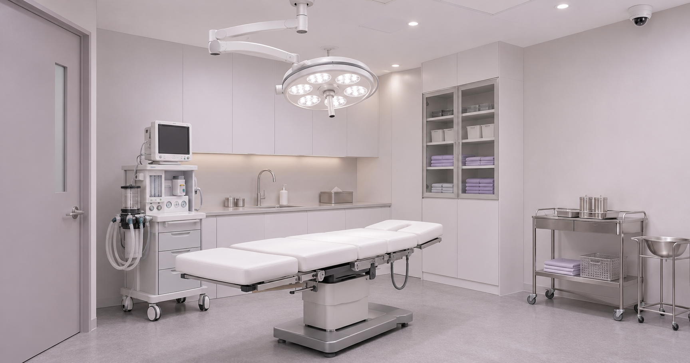
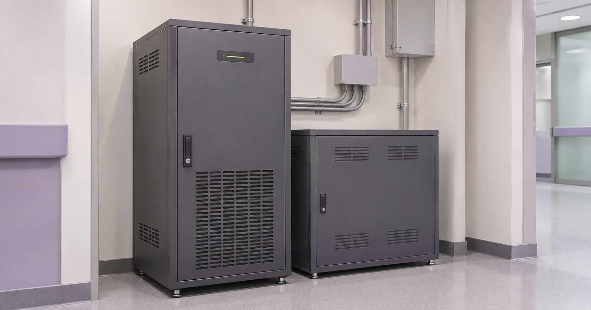
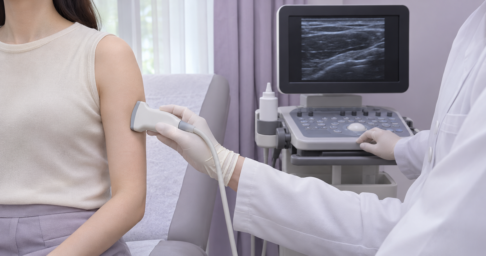
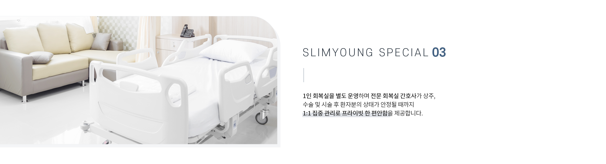

A CONTINUOUS PROCESS OF CARE
안전을 위한
체계적인 준비
슬림영의원은 수술 전 진료부터 수술 중 환자 상태 확인,
수술 후 경과 관리까지 각 단계의 안전관리를 중요하게 생각합니다.

RESPONSIBLE CARE
대표원장 중심의
1:1 책임진료
상담부터 수술 계획, 수술 후 경과 확인까지 환자별 상태를 고려한 진료를 진행합니다. 대표원장이 직접 진료 과정에 참여하며 일관된 관리가 이루어질 수 있도록 노력합니다.
전인성 대표원장 소개
OPERATING ROOM SAFETY
CCTV 설치 수술실 및
체계적인 수술 환경 관리
슬림영의원은 수술실에 CCTV를 설치·운영하고 있습니다. 환자를 위한 수술 환경을 세심하게 살핍니다.

PATIENT MONITORING
수술 중 생체신호
모니터링 시스템
수술 중에는 모니터링을 통해 환자의 상태를 확인합니다. 수술 과정에서 환자의 상태를 살피는 일을 중요하게 생각합니다.
확인 필요구체적인 측정 항목과 장비 세부 사양은 의료진 확인이 필요합니다.

POWER BACKUP
정전 상황에 대비한
UPS 전원 시스템
슬림영의원은 정전 상황에 대비한 UPS 전원 시스템을 보유하고 있습니다.

PERSONALIZED PLANNING
지방초음파를 활용한
1:1 맞춤 진료
환자별 상태를 고려하는 진료 과정에 지방초음파를 활용합니다. 개인의 상태를 살피고 상담 내용을 바탕으로 진료 계획을 안내합니다.
확인 필요구체적인 검사·진단 범위는 의료진 확인이 필요합니다.

POSTOPERATIVE CARE
수술 후 대표원장의
직접 경과 확인
수술 후 마취에서 회복한 환자분을 대표원장이 직접 찾아갑니다. 몸 상태와 불편한 점을 살피고, 수술 결과에 대해 설명하며 궁금한 점을 확인합니다.
슬림영만의 특별함